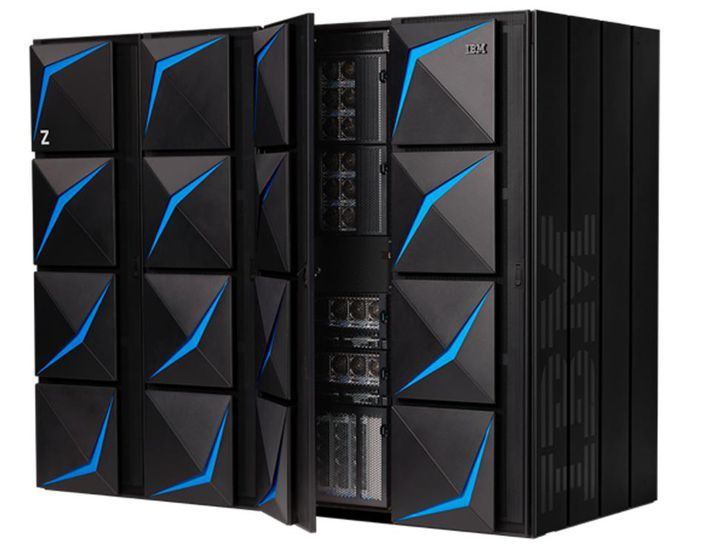
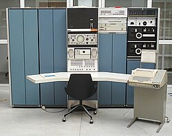
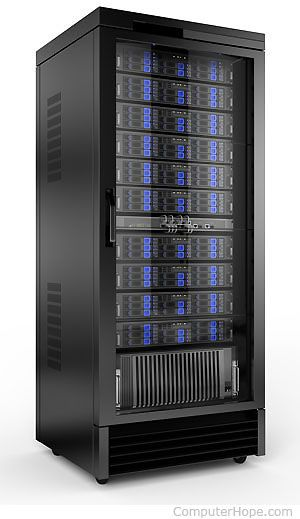
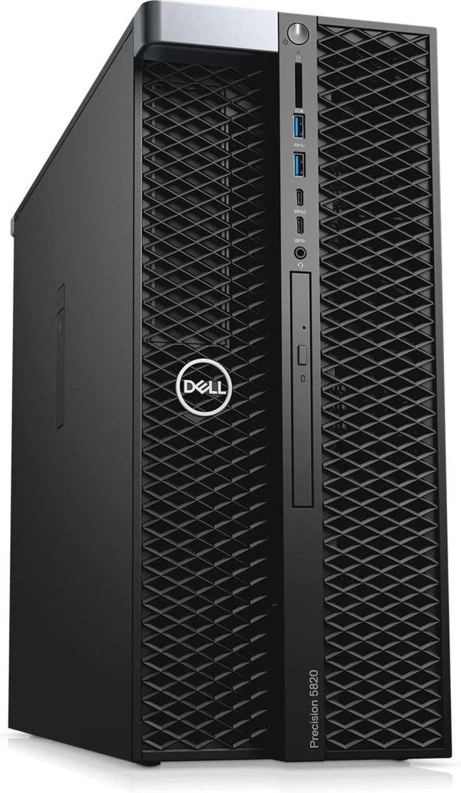

PORTFOLIO 6
TYPES OF COMPUTER
Introduction
A computer is a device for processing, storing, and displaying information (Pottenger et al., 2025). Computers come in different types and sizes depending on their purpose and performance. From the fastest supercomputers used in scientific research to small microcomputers for personal use. Each of the computer types has its own strengths or capabilities in performing various tasks.
Discussion
Each type of computer has a specific purpose and use. Supercomputers are the fastest and most powerful ones that can handle a lot of data, usually for research. Mainframe computers are big and strong machines that manage huge amounts of information for banks, airlines, or government offices. Mini computers are medium sized and can be used by several people at the same time, often used in small businesses and factories.
Servers are computers that store and share data to other computers connected in a network. Workstations are powerful desktop computers used for heavy work like designing, editing, or engineering. Lastly, microcomputers are the smallest and most common type that people use at home, in school, or in offices for everyday tasks like typing, studying, or browsing.
Comparison Table
| TYPES OF COMPUTERS | NAME/BRAND | CPU | MEMORY | PROCESSING SPEED | CALCULATING POWER | WORKING PRINCIPLE | ENERGY CONSUMPTIONS | FIELD OF USE |
|---|---|---|---|---|---|---|---|---|
| SUPER COMPUTER | IBM Summit | IBM POWER9 + NVIDIA GPUs | Up to 2.8 PB | Around 200 petaflops (quadrillions of operation per second) | Extremely high measured in petaflops | Works by performing parallel processing where thousands of processors handle tasks simultaneously for complex computations | Extremely high power consumptions due to coolig and constant operations | Used in scientific research, climate modeling, nuclear simulations, and weather forecasting |
| MAINFRAME COMPUTERS | IBM Z16 | IBM Telum Processor | Up to 40 TB | Around 4.5 GHz per core | Very high MIPS rating (millions of instructions per second) | Works by managing and processing large amounts of data and multiple transactions from many users at once | High power consumption, but optimized for 24/7 operations | Used in banks, airlines, hospitals, and large government systems |
| MINI COMPUTERS | DEC PDP-11 | 16-bit CPU | 256 KB - 4 MB | Moderate processing speed | Medium handles moderate data processing | Works by serving multiple users at once for small-scale tasks or departmental computing | Moderate energy consumptions | Used in small businesses, factories, and institutions for process control and business data |
| SERVER | Dell PowerEdge R740 | Intel Xeon Gold | Up to 3 TB | Around 3.4 GHz | High MIPS and FLOPS for data management | Works by storing, managing, and delivering data or resources to multiple client computers over a network | High power consumption since it runs continuously | Used in companies, schools, and web hosting to manage data, files, and websites |
| WORK STATIONS | HP Z8 G5 | Intel Xeon W9 | Up to 1 TB | 3.2 to 4.8 GHz | High processing and graphical computing power | Works by executing technical or scientific tasks that require large computing and graphical capabilities | Moderate to high energy use depending on workload | Used in graphic design, video editing, 3D animation, and engineering applications |
| MICRO COMPUTERS | Dell Inspiron / Acer Aspire | Intel Core i5/i7 | 8-32 GB | 2.5 to 4.2 GHz | Medium computing power | Works by executing tasks for a single user, such as typing, browsing, and light programming | Low energy consumption, efficient for personal use | Used in homes, schools, and offices for education, entertainment, and office work |
Description
| TYPES OF COMPUTERS | SAMPLE IMAGE | DESCRIPTIONS | USAGE |
|---|---|---|---|
| SUPERCOMPUTER |  |
Supercomputer is an extremely powerful computer. It is considered the fastest high performance systems available at any given time. They are characterized by having multiple CPUs (central processing units) to achieve high computational rates, large storage capacity, and fast input/output capability (Hosch & L, 2025). | Common applications for supercomputers include testing mathematical models for complex physical phenomena or designs, such as climate and weather, evolution of the cosmos, nuclear weapons and reactors, new chemical compounds (especially for pharmaceutical purposes), and cryptology (Hosch & L, 2025). |
| MAINFRAME COMPUTERS |  | Mainframe computer is a digital computer designed for high-speed data processing with heavy use of input/output units such as large capacity disks and printers (Britannica Editors, 2009). | Mainframes have been used for such applications as payroll computations, accounting, business transactions, information retrieval, airline seat reservations, and scientific and engineering computations (Britannica Editors, 2009). |
| MINI COMPUTERS |  | Mini computers are small, less expensive, and less powerful than a mainframe or supercomputer (The Editors of Encyclopaedia Britannica, 2009). | Minicomputers were used for scientific and engineering computations, business transaction processing, file handling, and database management (The Editors of Encyclopaedia Britannica, 2009). |
| SERVER |  | Server is a computer that provides information to other computers called “clients” on a computer network. This is called the client-server model. Servers can provide carious functionalities, often called “services”, such as sharing data or resources among multiple clients or performing computations for a client (Wikipedia contributors, 2025). | A server is used to store, manage, and share data or resources with other computers in a network. It helps multiple users access files, websites, or applications at the same time. For example, school websites, online games, and company databases all use servers to handle user requests and store information. |
| WORKSTATION |  | Workstations is a high-performance computer system that is basically designed for a single user and has advanced graphics capabilities, large storage capacity, and a powerful central processing unit. A workstation is more capable than a personal computer but is less advanced than a server (The Editors of Encyclopaedia Britannica, 1998). | A workstation is used for tasks that need higher performance than a regular computer, like graphic design, video editing, engineering, or 3D modeling. It’s usually used by professionals who need a powerful system to run heavy software smoothly. |
| MICRO COMPUTERS |  |
Micro computer is a complete computer on a small scale, designed for use by one person at a time. It is now called personal computer (PC). It is smaller than a mainframe or minicomputer. It is a single integrated semiconductor chip for its central processing unit (CPU). It also contains RAM, input/output ports, and a bus or system of interconnecting wires, all housed in a single unit usually referred to as a motherboard (Wright & Shea, 2024). | A microcomputer, also known as a personal computer (PC), is used for everyday tasks such as typing documents, browsing the internet, watching videos, or playing games. It’s the type of computer most students and office workers use for personal or school-related activities. |
Compare & Contrast
| TYPES OF COMPUTERS | PROCESSING SPEED | MEMORY CAPACITY | POWER CONSUMPTIONS | USAGE |
|---|---|---|---|---|
| MINI COMPUTERS | Has moderate processing speed, faster than microcomputers but slower than servers. | Medium memory capacity for small business data or multiple users. | Uses moderate amount of power. | Used in small businesses or factories to process data and control systems. |
| MICRO COMPUTERS | Has the lowest processing speed compared to others. | Small to medium memory (usually 8-32 GB). | Consumes the least power, energy efficient. | Used by one person for school, office work, or personal use. |
| WORKSTATIONS | Very high speed with powerful processors and graphics capability. | High memory capacity (can reach up to 1 TB). | Consumes moderate to high power depending on the workload. | Used for heavy tasks like video editing, design, and engineering. |
| SERVER | High processing speed for handling multiple users at once. | Very large memory capacity (up to several TB). | Consumes high power since it runs 24/7. | Used to manage and share data, websites, or files in a company or network. |
REFERENCES
- Britannica Editors. (2009, March 12). Mainframe | Definition & Facts. Encyclopedia Britannica. https://www.britannica.com/technology/mainframe
- Hosch, L, W. (2025, October 18). Supercomputer | Definition, Characteristics, Examples, & Facts. Encyclopedia Britannica. https://www.britannica.com/technology/supercomputer
- Pottenger, Morton, W., Freiberger, A, P., Hemmendinger, David, Swaine, & R, M. (2025, October 17). Computer | Definition, History, operating systems, & Facts. Encyclopedia Britannica. https://www.britannica.com/technology/computer
- The Editors of Encyclopaedia Britannica. (1998, July 20). Workstation | Definition & Facts. Encyclopedia Britannica. https://www.britannica.com/technology/workstation
- The Editors of Encyclopaedia Britannica. (2009, March 12). Minicomputer | Definition & Facts. Encyclopedia Britannica. https://www.britannica.com/technology/minicomputer
- Wikipedia contributors. (2025, October 17). Server (computing). Wikipedia. https://en.wikipedia.org/wiki/Server_(computing)
- Wright, G., & Shea, S. (2024, September 30). What is a microcomputer? Search IoT. https://www.techtarget.com/iotagenda/definition/microcomputer